Período Pré-Dinástico
Formação das primeiras comunidades agrícolas e desenvolvimento de técnicas de irrigação.
Um mergulho na rica história do Egito, explorando pirâmides, deuses, o Rio Nilo e a cultura que atravessa milênios. Conteúdo visual e informativo para conhecer os principais fatos e curiosidades desse país fascinante.
Destaque
O Egito concentra alguns dos sítios arqueológicos mais preservados do mundo, reconhecidos pela UNESCO.
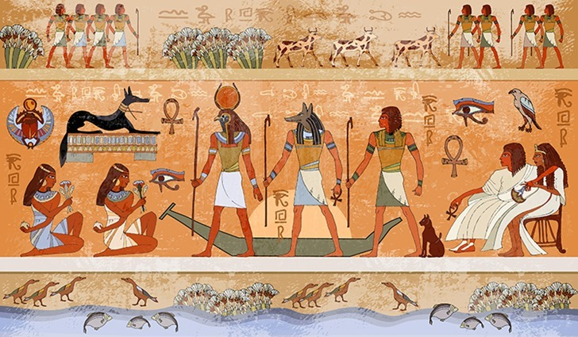
Linha do tempo
O Egito floresceu ao longo do Rio Nilo, criando uma das civilizações mais influentes da Antiguidade. Sua organização social, religião e ciência ainda inspiram pesquisas no mundo todo.
Formação das primeiras comunidades agrícolas e desenvolvimento de técnicas de irrigação.
Centralização do poder e construção das grandes pirâmides, como as de Gizé.
Expansão territorial, riquezas comerciais e faraós famosos como Hatshepsut e Ramsés II.
Pontos turísticos
Do deserto às margens do Nilo, o Egito combina monumentos milenares e paisagens surpreendentes.
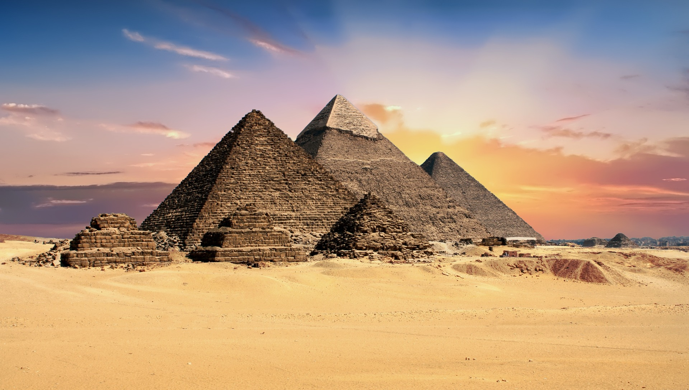
Uma das Sete Maravilhas do Mundo Antigo.
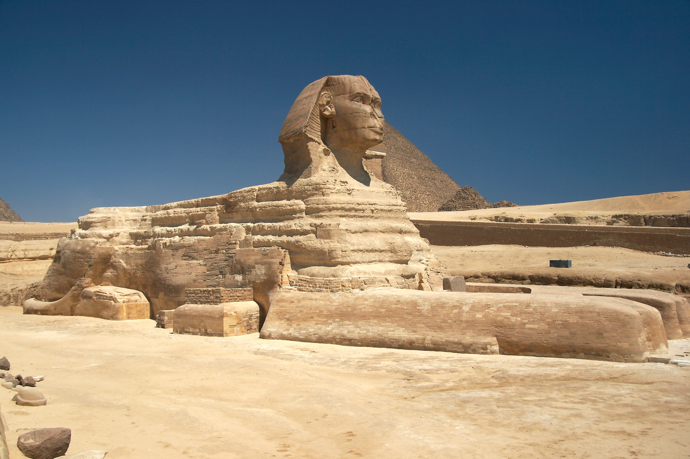
Guardião simbólico das pirâmides e mistérios egípcios.
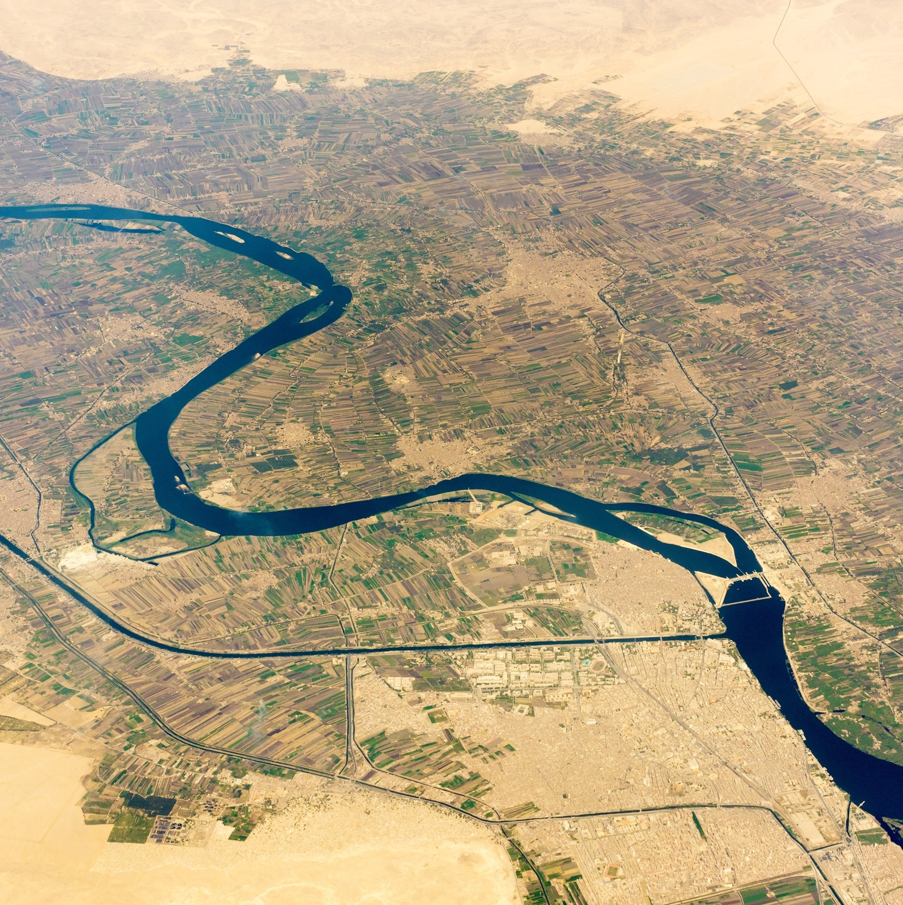
Fonte de vida, agricultura e cultura há milênios.

Local de descanso final de faraós e nobres.
Cultura
A cultura egípcia mistura tradição e modernidade, mantendo festivais, rituais e sabores característicos.
Deuses como Ísis, Osíris e Rá eram centrais na vida cotidiana, refletidos em templos e cerimônias.
A família é um valor forte e o artesanato, como papiros e joias, preserva técnicas antigas.
Pratos tradicionais incluem koshari, falafel e pães artesanais, com especiarias marcantes.
Os hieróglifos e relevos em pedra contam histórias de faraós e conquistas.
Galeria
Uma seleção visual para contextualizar arquitetura, paisagens e símbolos.
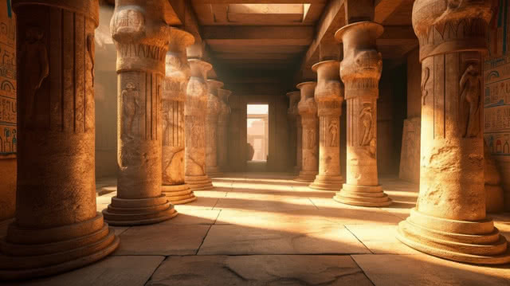
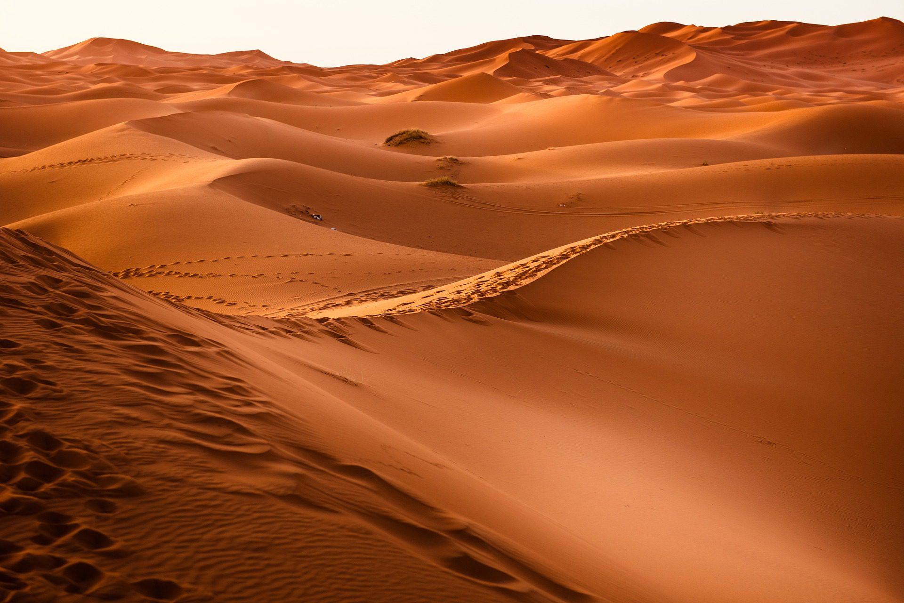

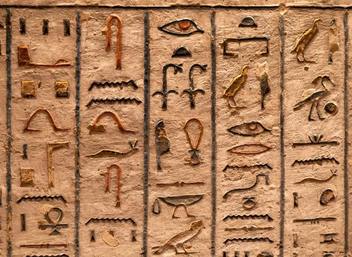

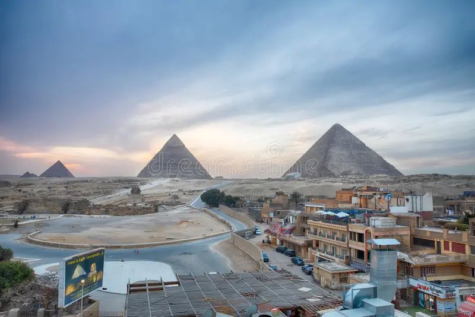
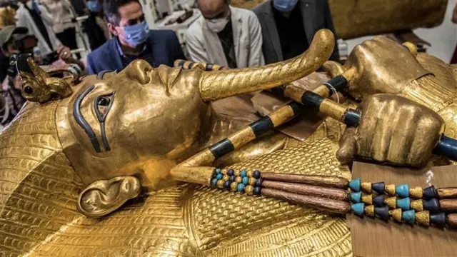

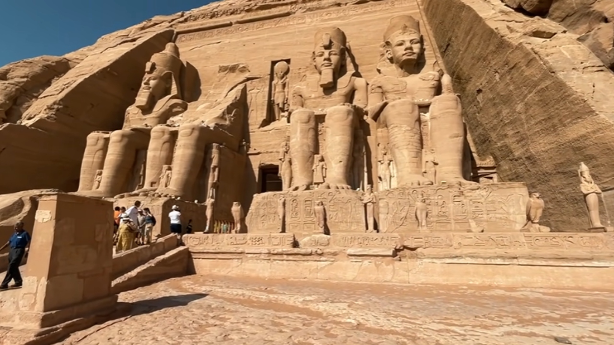
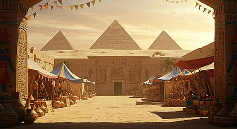
Curiosidades
Pequenos detalhes que ajudam a entender por que o Egito é tão fascinante.
Os egípcios criaram um calendário baseado no ciclo do Sol e na cheia do Nilo.
Existiam especializações médicas e registros sobre tratamentos cirúrgicos.
Era um ritual religioso para preservar o corpo e a identidade no além.
Um sistema complexo de símbolos que combinava fonogramas e ideogramas.
Acredita-se que milhares de trabalhadores qualificados participaram da construção das pirâmides, usando técnicas avançadas de engenharia.
A mitologia egípcia é rica em histórias de deuses, heróis e oalém, influenciando a arte e a cultura por milênios.
O deserto era visto como um lugar de mistério e perigo, mas também de proteção contra invasores.
O Nilo era a fonte de vida, fornecendo água, transporte e fertilidade para a agricultura, sendo central para a sobrevivência e prosperidade do Egito.
Contato
Formulário simples para feedbacks ou parcerias acadêmicas.